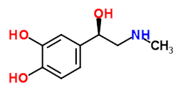

La peur est la chambre noire où le négatif se développe.
C'est quoi la peur?
La peur est un sentiment d’angoisse,
pouvant être déclenché par un choc émotif. Elle peut être manifestée
physiquement par la pâleur, le tremblement, la paralysie… Elle exige de
même une réaction immédiate face à un danger.
La peur est une réaction en chaine qui se déroule essentiellement dans le cerveau.
Tout doit bien sûr commencer par une stimulation sensorielle quelconque comme la vue
d’une forme étrange ou un son menaçant. Les stimulus perçus vont être transmis au thalamus.
Il les transfère ensuite aux amygdales qui reconnaissent une situation non rassurante
ce qui provoque la peur.
Le sang est par suite surchargé d’adrénaline
qui est secrété par les glandes surrénales situés au-dessous
des reins, d’autre part le cortex visuel analyse le stimulus et vise à le contrôler.
L’adrénaline - de formule brute C9H13NO3 - epinephrine est une hormone secrétée par les glandes surrénales. Elle est libérée dans le sang en cas d’émotions intenses peur, stress…. On la désigne par l’hormone du stress et elle joue le rôle d’un neurotransmetteur. Elle provoque également une accélération du rythme cardiaque, de la respiration et de la pression artérielle. 
C'est quoi le stress?
Le stress est une réaction de reflex de l’organisme face à une situation
angoissante, épuisante, ou dangereuse. C’est une façon de stimuler nos
sentiments par la pensée.
Il existe deux types de stress : le stress aigu qui est temporaire et
qui survient après un événement traumatisant et/ou déstabilisant, et
le stress chronique qui lui, est permanant et lié à différentes causes
telles que l'anxiété ou une situation difficile qui persiste.
Le stress est regroupé en trois étapes
L'agent de stress
- est un stimulus mental, émotionnel… qui peut être mineur ou majeur,
attendu ou soudain…
Le stress peut aussi être provoqué par des événements physiologiques
prise de médicament, blessure.
La réaction au stress
- est réactions de l’organisme comme par exemple
l’augmentation de la fréquence cardiaque qui constituent une
sorte de signaux d’alertes enfin de parvenir à une réponse au stimulus.
L'attitude face à la situation de stress
- l’intensité de la réaction du corps dépend de la perception du stimulus
des situations qui ne provoquent pas de stress
généralement peuvent en provoquer si l’on anticipe une fin pejorative.
Peut-on mesurer la peur?
Le rythme cardiaque est un critère intéressant pour mesurer la peur. On peut étudier le niveau de stress ou de peur d’un individu selon l’évolution de sa fréquence cardiaque.
Donc comment mesure-t-on le stress?
Il existe deux façons de mesurer le stress
de façon physiologique - en mesurant le
taux de cortisol libéré dans le sang. Ce taux augmente lors d’une réaction au stress…
de façon psychologique - grâce à l'échelle
d'Holmes-Rahe qui permet de s'auto évaluer. Il s’agit d’une série d’évènements
auxquels correspond des valeurs précises. Le patient coche les cases qui
correspondent aux évènements qu’il a vécus. Ensuite les valeurs sont additionnées,
si le nombre obtenu dépasse 150, le stress est qualifié d’élevé, d’où la nécessite
de consulter un médecin.
{kind=link}